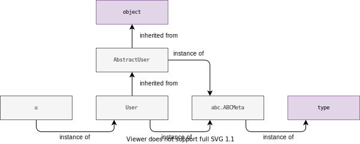
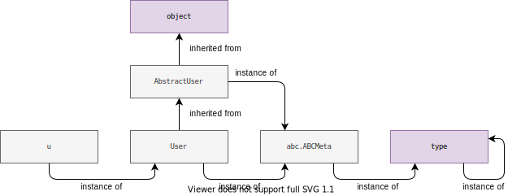
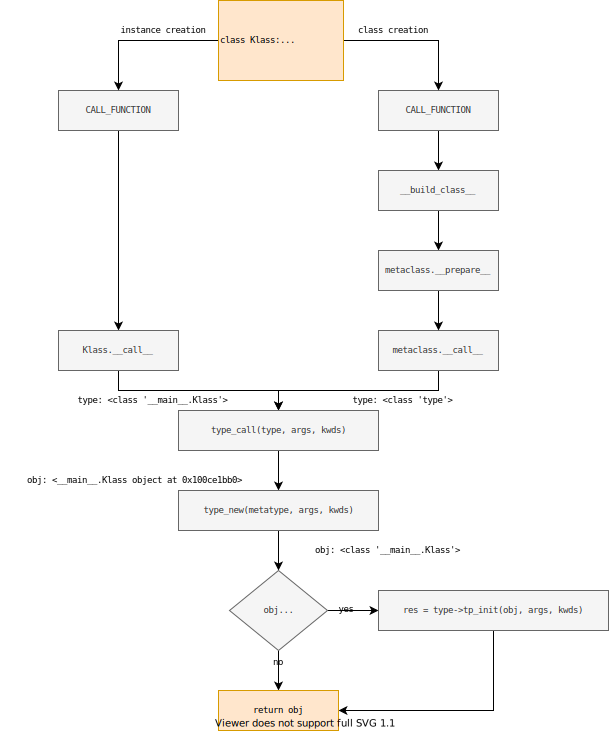

Metaclasses
В лекции «ООП: Классы» мы говорили о том, что классы контролируют создание новых экземпляров, но, как мы помним, в Python все является объектом, в том числе и классы, поэтому есть классы, которые контролируют создание новых классов - метаклассы (метатипы).
По умолчанию метаклассом для всех классов является класс type, только если явно не был указан другой метакласс:
class AbstractUser(metaclass=abc.ABCMeta):
@abc.abstractmethod
def is_anonymous(self) -> bool:
pass
class User(AbstractUser):
def __init__(self, username: str) -> None:
self.username = username
def is_anonymous(self) -> bool:
return False
>>> u = User()
>>> type(u)
<class '__main__.User'>
>>> isinstance(u, User)
True
>>> type(User)
<class 'abc.ABCMeta'>
>>> isinstance(User, abc.ABCMeta)
True
>>> type(abc.ABCMeta)
<class 'type'>
>>> isinstance(abc.ABCMeta, type)
True

Также вспомним, что все типы в виртуальной машине CPython представлены структурой PyTypeObject, которая в основном содержит указатели на функции-слоты, которые определяют поведение объекта:
// https://github.com/python/cpython/blob/master/Include/cpython/object.h#L189
struct _typeobject {
PyObject_VAR_HEAD
const char *tp_name; /* For printing, in format "<module>.<name>" */
Py_ssize_t tp_basicsize, tp_itemsize; /* For allocation */
// ...
/* Method suites for standard classes */
PyNumberMethods *tp_as_number;
PySequenceMethods *tp_as_sequence;
PyMappingMethods *tp_as_mapping;
// ...
ternaryfunc tp_call;
// ...
initproc tp_init;
// ...
newfunc tp_new;
// ...
};
Например, тип может поддерживать численный протокол (numeric protocol), для этого слот tp_as_number должен содержать указатель на структуру PyNumberMethods, с реализацией соответствующих методов (когда слоты объединены в единую структуру, то их называют подслотами). Рассмотрим пример для целых чисел:
static PyNumberMethods long_as_number = {
(binaryfunc)long_add, /*nb_add*/
(binaryfunc)long_sub, /*nb_subtract*/
(binaryfunc)long_mul, /*nb_multiply*/
// ...
};
PyTypeObject PyLong_Type = {
PyVarObject_HEAD_INIT(&PyType_Type, 0)
"int", /* tp_name */
// ...
&long_as_number, /* tp_as_number */
// ...
};
Для сложения двух объектов используется инструкция BINARY_ADD:
>>> import dis
>>> dis.dis("a + b")
1 0 LOAD_NAME 0 (a)
2 LOAD_NAME 1 (b)
4 BINARY_ADD
6 RETURN_VALUE
Давайте посмотрим на описание этой инструкции:
case TARGET(BINARY_ADD): {
PyObject *right = POP();
PyObject *left = TOP();
PyObject *sum;
/* NOTE(vstinner): Please don't try to micro-optimize int+int on
CPython using bytecode, it is simply worthless.
See http://bugs.python.org/issue21955 and
http://bugs.python.org/issue10044 for the discussion. In short,
no patch shown any impact on a realistic benchmark, only a minor
speedup on microbenchmarks. */
if (PyUnicode_CheckExact(left) &&
PyUnicode_CheckExact(right)) {
sum = unicode_concatenate(tstate, left, right, f, next_instr);
/* unicode_concatenate consumed the ref to left */
}
else {
sum = PyNumber_Add(left, right);
Py_DECREF(left);
}
Py_DECREF(right);
SET_TOP(sum);
if (sum == NULL)
goto error;
DISPATCH();
}
В случае строк будет выполнена конкатенация, во всех остальных случаях будет вызвана функция PyNumber_Add:
PyObject *
PyNumber_Add(PyObject *v, PyObject *w)
{
PyObject *result = BINARY_OP1(v, w, NB_SLOT(nb_add), "+");
if (result != Py_NotImplemented) {
return result;
}
Py_DECREF(result);
PySequenceMethods *m = Py_TYPE(v)->tp_as_sequence;
if (m && m->sq_concat) {
result = (*m->sq_concat)(v, w);
assert(_Py_CheckSlotResult(v, "+", result != NULL));
return result;
}
return binop_type_error(v, w, "+");
}
Наконец:
static PyObject *
binary_op1(PyObject *v, PyObject *w, const int op_slot
#ifndef NDEBUG
, const char *op_name
#endif
)
{
binaryfunc slotv;
if (Py_TYPE(v)->tp_as_number != NULL) {
slotv = NB_BINOP(Py_TYPE(v)->tp_as_number, op_slot);
}
else {
slotv = NULL;
}
binaryfunc slotw;
if (!Py_IS_TYPE(w, Py_TYPE(v)) && Py_TYPE(w)->tp_as_number != NULL) {
slotw = NB_BINOP(Py_TYPE(w)->tp_as_number, op_slot);
if (slotw == slotv) {
slotw = NULL;
}
}
else {
slotw = NULL;
}
if (slotv) {
PyObject *x;
if (slotw && PyType_IsSubtype(Py_TYPE(w), Py_TYPE(v))) {
x = slotw(v, w);
if (x != Py_NotImplemented)
return x;
Py_DECREF(x); /* can't do it */
slotw = NULL;
}
x = slotv(v, w);
assert(_Py_CheckSlotResult(v, op_name, x != NULL));
if (x != Py_NotImplemented) {
return x;
}
Py_DECREF(x); /* can't do it */
}
if (slotw) {
PyObject *x = slotw(v, w);
assert(_Py_CheckSlotResult(w, op_name, x != NULL));
if (x != Py_NotImplemented) {
return x;
}
Py_DECREF(x); /* can't do it */
}
Py_RETURN_NOTIMPLEMENTED;
}
Функция binary_op1 принимает три аргумента: левый операнд, правый операнд и смещение слота. Далее проверяется реализуют ли левый и правый операнды (при условии, что его тип отличен от типа левого операнда) требуюмую операциию. Затем логика простая:
- если левый операнд не содержит слота, то вызвать слот правого;
- если правый операнд является подтипом левого, то вызвать его реализацию;
- иначе вызвать слот левого операнда.
# https://tenthousandmeters.com/blog/python-behind-the-scenes-6-how-python-object-system-works/
>>> class HungryInt(int):
... def __add__(self, other):
... return self
...
>>> x = HungryInt(5)
>>> x + 2
5
>>> 2 + x
7
Важно не путать объекты, содержащие данные, и типы:
>>> type(1) is type(2)
True
В примере объекты 1 и 2 различны, но у них один тип int, в свою очередь типом которого является type, а типом type является... тоже type:
>>> type(type)
<class 'type'>
>>> isinstance(type, type)
True
Если мы посмотрим на определение структуры PyType_Type, то заметим, что type в качестве типа содержит ссылку на себя самого:
PyTypeObject PyType_Type = {
PyVarObject_HEAD_INIT(&PyType_Type, 0)
"type", /* tp_name */
// ...
offsetof(PyTypeObject, tp_vectorcall), /* tp_vectorcall_offset */
// ...
(ternaryfunc)type_call, /* tp_call */
// ...
offsetof(PyTypeObject, tp_dict), /* tp_dictoffset */
type_init, /* tp_init */
0, /* tp_alloc */
type_new, /* tp_new */
// ...
};

Давайте сначала рассмотрим в общих чертах как происходит определение нового класса на примере класса пользователь определенного выше.
Если не был явно указан метакласс, то берется метакласс наиболее подходящего родителя:
>>> meta = type(AbstractUser)
>>> meta
abc.ABCMeta
Затем мы «изолируем» тело класса:
>>> cls_body = """
NUM_EYES = 2
def __init__(self, username: str) -> None:
self.username = username
def is_anonymous(self) -> bool:
return False
"""
На следующем шаге будет создан (подготовлен) словарь атрибутов класса:
>>> cls_dict = meta.__prepare__("User", (AbstractUser,))
>>> cls_dict
{}
На третьем шаге выполняется тело класса в окружении глобального и локального (словаря атрибутов) пространства имен:
>>> exec(cls_body, globals(), cls_dict)
>>> cls_dict
{
'__init__': <function __init__ at 0x10d6c2d30>,
'is_anonymous': <function is_anonymous at 0x10d6c2700>
}
Как видно, результатом выполнения этого шага является заполнение словаря атрибутов класса. Затем создается сам класс:
>>> User = meta.__new__(meta, "User", (AbstractUser,), cls_dict)
>>> bob = User("bob")
>>> bob.username
'bob'
И наконец, если для класса в метаклассе был определен инициализатор, то он будет вызван:
meta.__init__(User, "User", (AbstractUser,), cls_dict)
Последние шаги должны вам напоминать создание экземпляра класса, дальше мы увидим, что они и правда очень похожи.
class Meta(type):
@classmethod
def __prepare__(meta, name, bases):
print(f"__prepare__ was called on {meta.__name__} with {name}, {bases}")
return super().__prepare__(meta, name, bases)
def __new__(meta, name, bases, kwds):
print(f"__new__ was called on {meta.__name__} with {name}, {bases}, {kwds}")
obj = super().__new__(meta, name, bases, kwds)
return obj
def __init__(cls, name, bases, kwds):
print(f"__init__ was called on {cls.__name__} with {name}, {bases}, {kwds}")
super().__init__(name, bases, kwds)
>>> User = Meta("User", (), {"__init__": __init__, "get_username": get_username})
__new__ was called on Meta with User, (), {'__init__': <function __init__ at 0x1039693a0>, 'get_username': <function get_username at 0x103969430>}
__init__ was called on User with User, (), {'__init__': <function __init__ at 0x1039693a0>, 'get_username': <function get_username at 0x103969430>}
>>> class User(metaclass=Meta):
... def __init__(self, username):
... self.username = username
...
... def get_username(self):
... return self.username
...
__prepare__ was called on Meta with User, ()
__new__ was called on Meta with User, (), {'__module__': '__main__', '__qualname__': 'User', '__init__': <function User.__init__ at 0x103969e50>, 'get_username': <function User.get_username at 0x103969ee0>}
__init__ was called on User with User, (), {'__module__': '__main__', '__qualname__': 'User', '__init__': <function User.__init__ at 0x103969e50>, 'get_username': <function User.get_username at 0x103969ee0>}
# https://github.com/fastai/fastcore/blob/master/fastcore/meta.py#L24
class PrePostInit(type):
def __call__(cls, *args, **kwargs):
obj = cls.__new__(cls)
if hasattr(obj, "__pre_init__"):
obj.__pre_init__(*args, **kwargs)
obj.__init__(*args, **kwargs)
if hasattr(obj, "__post_init__"):
obj.__post_init__(*args, **kwargs)
return obj
Давайте теперь рассмотрим как происходит создание нового класса:
>>> source = """
... class User(AbstractUser):
... @property
... def is_anonymous(self) -> bool:
... return False
... """
>>> dis.dis(source)
2 0 LOAD_BUILD_CLASS
2 LOAD_CONST 0 (<code object User at 0x100df9660, file "<dis>", line 2>)
4 LOAD_CONST 1 ('User')
6 MAKE_FUNCTION 0
8 LOAD_CONST 1 ('User')
10 LOAD_NAME 0 (AbstractUser)
12 CALL_FUNCTION 3
14 STORE_NAME 1 (User)
16 LOAD_CONST 2 (None)
18 RETURN_VALUE
Инструкция LOAD_BUILD_CLASS помещает на стек встроенную функцию __build_class__, LOAD_CONST помещает на стек объект кода, имя класса и создает функцию:
case TARGET(MAKE_FUNCTION): {
PyObject *qualname = POP();
PyObject *codeobj = POP();
PyFunctionObject *func = (PyFunctionObject *)
PyFunction_NewWithQualName(codeobj, f->f_globals, qualname);
// ...
PUSH((PyObject *)func);
DISPATCH();
}
...
>>> __builtins__.__build_class__ = lambda *args, **kwargs: print(args, kwargs)
>>> class A: pass
...
(<function A at 0x104fadaf0>, 'A') {}
dis.dis("class User: pass")
1 0 LOAD_BUILD_CLASS
2 LOAD_CONST 0 (<code object User at 0x10b771390 ...>)
4 LOAD_CONST 1 ('User')
6 MAKE_FUNCTION 0
8 LOAD_CONST 1 ('User')
10 CALL_FUNCTION 2
12 STORE_NAME 0 (User)
14 LOAD_CONST 2 (None)
16 RETURN_VALUE
Disassembly of <code object User at 0x10b771390 ...>:
1 0 LOAD_NAME 0 (__name__)
2 STORE_NAME 1 (__module__)
4 LOAD_CONST 0 ('User')
6 STORE_NAME 2 (__qualname__)
8 LOAD_CONST 1 (None)
10 RETURN_VALUE
...
case TARGET(LOAD_BUILD_CLASS): {
_Py_IDENTIFIER(__build_class__);
PyObject *bc;
if (PyDict_CheckExact(f->f_builtins)) {
bc = _PyDict_GetItemIdWithError(f->f_builtins, &PyId___build_class__);
// ...
Py_INCREF(bc);
}
// ...
PUSH(bc);
DISPATCH();
}
CALL_FUNCTION вызывает ___build_class__ для создания класса (Python/bltinmodule.c:105).
/* AC: cannot convert yet, waiting for *args support */
static PyObject *
builtin___build_class__(PyObject *self, PyObject *const *args, Py_ssize_t nargs,
PyObject *kwnames)
{
PyObject *func, *name, *bases, *mkw, *meta, *winner, *prep, *ns, *orig_bases;
PyObject *cls = NULL, *cell = NULL;
int isclass = 0; /* initialize to prevent gcc warning */
// ...
func = args[0]; /* Better be callable */
// ...
name = args[1];
// ...
orig_bases = _PyTuple_FromArray(args + 2, nargs - 2);
if (orig_bases == NULL)
return NULL;
bases = update_bases(orig_bases, args + 2, nargs - 2);
// ...
if (meta == NULL) {
/* if there are no bases, use type: */
if (PyTuple_GET_SIZE(bases) == 0) {
meta = (PyObject *) (&PyType_Type);
}
/* else get the type of the first base */
else {
PyObject *base0 = PyTuple_GET_ITEM(bases, 0);
meta = (PyObject *) (base0->ob_type);
}
Py_INCREF(meta);
isclass = 1; /* meta is really a class */
}
// ...
/* else: meta is not a class, so we cannot do the metaclass
calculation, so we will use the explicitly given object as it is */
if (_PyObject_LookupAttrId(meta, &PyId___prepare__, &prep) < 0) {
ns = NULL;
}
else if (prep == NULL) {
ns = PyDict_New();
}
else {
PyObject *pargs[2] = {name, bases};
ns = _PyObject_FastCallDict(prep, pargs, 2, mkw);
Py_DECREF(prep);
}
// ...
cell = PyEval_EvalCodeEx(PyFunction_GET_CODE(func), PyFunction_GET_GLOBALS(func), ns,
NULL, 0, NULL, 0, NULL, 0, NULL,
PyFunction_GET_CLOSURE(func));
if (cell != NULL) {
// ...
PyObject *margs[3] = {name, bases, ns};
cls = _PyObject_FastCallDict(meta, margs, 3, mkw);
// ...
}
// ...
return cls;
}
(gdb) p ((PyTypeObject*)((PyTupleObject*)bases)->ob_item[0])->tp_name
$36 = 0x100ebeca0 "A"
- Первый The first chunk of code deals with extracting the arguments and setting defaults.
- Next, if no metaclass is supplied, BBC looks at the base classes and takes the metaclass of the first base class. If there are no base classes, the default metaclass
typeis used. - If the metaclass is really a class (note that in Python any callable can be given as a metaclass), look at the bases again to determine "the most derived" metaclass.
- At this point BBC has a metaclass [5], so it starts by calling its
__prepare__method to create a namespace dictionary for the class. If there's no such method, an empty dict is used - The function argument is invoked, passing the namespace dict as the only argument. If we look back at the disassembly of this function (the second one), we see that the first argument is placed into the
f_localsattribute of the frame (with theSTORE_LOCALSinstruction). In other words, this dictionary is then used to populate the class attributes. The function itself returnsNone- its outcome is modifying the namespace dictionary. - Finally, the metaclass is called with the name, list of bases and namespace dictionary as arguments.
(gdb) p ((PyFunctionObject *)func)->func_name
$1 = 'AbstractUser'
(gdb) p name
$2 = 'AbstractUser'
(gdb) p bases
$3 = ()
(gdb) p ns
$4 = {'__module__': '__main__', '__qualname__': 'AbstractUser', 'is_anonymous': <function at remote 0x100fb741
0>}
(gdb) p ((PyTypeObject*)meta)->tp_name
$5 = 0x1003ddd46 "type"
type_call -> Objects/typeobject.c:1000

import contextlib
import typing
import wrapt
@wrapt.decorator
def log_call(wrapped_method, instance, args, kwargs) -> typing.Any:
""" Print when the decorated method is called. """
method_name = wrapped_method.__qualname__
class_name = instance.__class__.__qualname__
print(f"Calling method {method_name} for {class_name}.")
return wrapped_method(*args, **kwargs)
class LogMethods(type):
""" Metaclass that decorates methods with log_call. """
def __new__(cls, name, bases, attrs, **kwargs):
for attr, value in attrs.items():
if not callable(value):
continue
attrs[attr] = log_call(value)
return super().__new__(cls, name, bases, attrs, **kwargs)